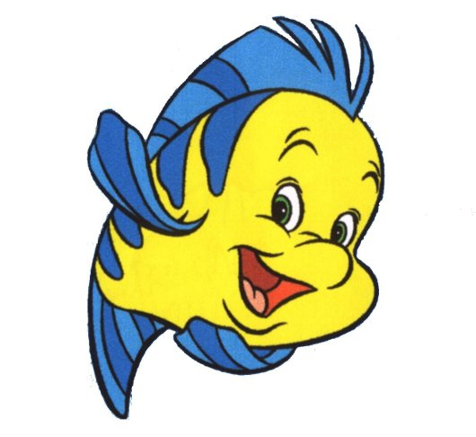

I'm not going to teach you Haskell
I'm not going to teach you how to teach Haskell
I'm not going to convince you to learn Haskell
I am going to talk about some problems I and other independent learners ran into trying to learn Haskell. Some of these take-aways are applicable outside of Haskell or even programming.
I kept skimming off the surface like a stone
It wasn't pretty like this picture
I kept getting frustrated and stuck.
I'd complete a tutorial or book, attempt a project, flounder, then quit again.
 You start wondering how anybody learned Haskell if you do this long enough.
Mostly by working through exercises and working on my own projects
I spent way too much time bouncing between different resources before I was able to work on any projects
Almost two years now that I've been spending a lot of my time teaching Haskell
In person tutorials, meetups, email, IRC, Skype, etc.
#haskell-beginners is up to ~250 users these days.
Some very experienced Haskell users are helping out in #haskell-beginners now as well.
https://github.com/bitemyapp/learnhaskell has been around for a year as of the 19th this month and has been translated into German, French, Spanish, Italian, and Portuguese by community volunteers.
cis194 (Spring '13), followed by NICTA Course.
Both are recommendations I got from other people. I didn't discover them myself.
I read them and tested them before changing the guide.
Everything in the guide is subject to getting removed/modified/replaced based on what we (myself and the other people helping out in #haskell-beginners) see people having problems with
There is no control group
Still have n > 1 working in our favor
Lot to learn from professors, grad students, TAs teaching classes, but the audience is very different
Some are uni students, but many are self-taught programmers with little/no formal background in CS
"Here's some code, it does stuff" is appropriate (and quite useful) in library documentation but isn't a vehicle for comprehension by itself
The learner has to synthesize as well as observe. Ideally the synthesis is iterated - they can change things as it follows a theme.
What if I do it with case? Guards? If-then-else?
Usually it means you have a self-mythologized sample-size of 1.
Often people won't remember what parts they got stuck on or how they overcome those issues, remembering only the "main track" (book, tutorial, course) they were following when they got stuck.
Common anti-pattern: experienced (Haskellers | Programmers | etc.) recommending resources they didn't actually use to learn the topic.
CLRS is recommended by a lot more people than have done at least 10% of the book.
Going to call shenanigans on MacLane's Algebra too, unless you read it while in grad school for mathematics. You need a strong foundation before it will do you any good.
They're recommending resources to which they assign high prestige (difficulty, obscurity, etc.)
Then a beginner attempts to learn using an expert's Flavor of the Month, gets stuck, and burns out
You are not doing learners a favor when you do this
That resource is probably not how you learned the topic
At least some of the time.
Try to anticipate what kind of errors they will encounter.
I only know what people get stuck on if they ask for help from me directly or from others generally in the IRC channel
It's optimized around minimizing the rate at which people drop-out/get stuck. This means there are individual exceptions to the rule that can't be accounted for.
Also, some of the worst materials for learning Haskell are also the most well known, so I have to actively work to steer people away from those.
Most resources have essentially one explanation per concept.
This is...not generally enough. Good exercises will highlight multiple facets of a single concept.
Let's see why this is a problem and include confusion, misunderstanding, or blocking (drop out or stuck) as our failure modes.
Haskell isn't a one-trick pony. If you're learning Haskell, (almost) no matter what programming languages you already know, you are going to learn at least a handful of new concepts that don't have a strong connection with something you already know.
Most resources don't use anything close to an "known effective" explanation for each concept, but let's pretend the top-ranked explanation for each has an 80% success rate.
Constants -> Variables -> Functions -> Types ->
Typeclasses -> Products/Sums ->
Type Constructors -> Kinds
Constants (80%) -> Variables (80%) -> Functions (80%) ->
Types (80%) -> Typeclasses (80%) -> Products/Sums (80%) ->
Type Constructors (80%) -> Kinds (80%)
We haven't gotten to Functor yet and we're down to 16% of our cohort.
Things usually get worse with Functor/Applicative/Monad. Many of the Haskell resources out there don't cover these at all, those that do either don't have proper exercises or have prose that provides zero explanatory power.
NICTA Course excels here but needs the bootstrap for the basics from cis194, especially for self-learners that don't have a tutor on hand.
You have to test the exercises and explanations and figure out multiple angles and approaches for explaining things.
cis194 and NICTA course are relatively well tested and the latter is updated based on teaching experience regularly.
(in Haskell)
Data constructors, type constructors (and kinds), functions, function composition, sum types, product type
I'm probably forgetting something here.
Handwave -> Functor f => (map, []) ~ (fmap, f)
This is dangerous if this is all you tell them but it's not a bad bootstrap
newtype Const a b = Const a
instance Functor (Const a) where
fmap f (Const x) = Const xfmap would seem to imply. Const has no witness to there being a value of type b because b is phantom.Equating Functor with collections/containers will deprive the reader of understanding how Haskell actually works.
Examples aren't enough for Functor either.
Stick to the facts, use exercises to build intuitions. Don't stop at facile approximations.
Category theory provides different (but valuable) insight. Not a first-stop for learning Functor as it exists in Haskell
Examples that work
Examples that don't work
Examples they need to fix
Write lots of Functor instances for datatypes
Write lots of code that commends the use of fmap
Learning is something you do, not something that happens to you after reading a paragraph of text
You can't just read, you have to work
Watch Kmett's talk, "Stop Treading Water: Learning to Learn"
Julie (https://twitter.com/argumatronic) and I are working on a book
We've been targeting and testing with non-programmers on the assumption that if the material is sufficiently comprehensive for them, it should work as well or better for anybody that already codes.
http://haskellbook.com/ is available for early access now